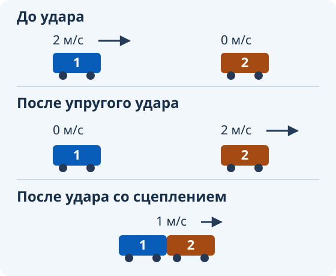

Импульс тела. Импульс силы. Закон сохранения импульса. Упругое и неупругое взаимодействие
Представьте движущуюся тележку, которая ударяет другую. Как узнать, куда поедут тележки после удара? Сила удара быстро меняется, и определить её в каждый момент трудно. Зато по массам и скоростям можно сравнить, каким был общий импульс тележек до столкновения и каким он стал после.
Импульс тела
Импульс направлен так же, как скорость. Его единица в СИ — \(\text{кг}\cdot\text{м/с}\). В выбранной системе отсчёта у покоящегося тела импульс равен нулю. При одной и той же скорости больше импульс тела с большей массой.
При движении вдоль прямой удобнее пользоваться проекцией \(p_x=mv_x\). Направим ось вправо. Если тележка массой \(2\ \text{кг}\) движется влево со скоростью \(3\ \text{м/с}\), то \(v_x=-3\ \text{м/с}\) и \(p_x=-6\ \text{кг}\cdot\text{м/с}\). Минус указывает направление, а модуль импульса равен \(6\ \text{кг}\cdot\text{м/с}\).
Импульс силы и изменение импульса тела
Сила одной и той же величины изменит движение сильнее, если будет действовать дольше. Импульс постоянной силы за промежуток времени \(\Delta t\) равен
Импульс силы направлен по силе, его единица — \(\text{Н}\cdot\text{с}\). Из равенства \(1\ \text{Н}=1\ \text{кг}\cdot\text{м/с}^2\) следует, что \(1\ \text{Н}\cdot\text{с}=1\ \text{кг}\cdot\text{м/с}\).
Из второго закона Ньютона для тела постоянной массы следует, что импульс равнодействующей равен изменению импульса тела:
Для силы, которая меняется во время удара, в произведении \(\vec F\Delta t\) используют среднюю силу за этот промежуток.
Закон сохранения импульса
Рассмотрим систему из двух тележек. Силы, с которыми они действуют друг на друга, — внутренние. По третьему закону Ньютона эти силы равны по модулю и направлены противоположно. За время столкновения они дают тележкам равные по модулю и противоположные изменения импульса. При сложении эти изменения компенсируются.
Трение о дорожку — пример внешней силы, поскольку дорожка не входит в выбранную систему. Если суммарным импульсом внешних сил за короткое время удара можно пренебречь, полный импульс тележек практически одинаков до и после столкновения.
Если внешние силы действуют, но суммарный внешний импульс вдоль выбранной оси равен нулю, сохраняется проекция полного импульса на эту ось.
Упругое и неупругое столкновение
Кинетическая энергия движущегося тела равна \(E_k=mv^2/2\), где \(v\) — модуль скорости. При сравнении столкновений смотрят на суммарную кинетическую энергию тел до и после взаимодействия.
| Вид столкновения | Полный импульс при нулевом внешнем импульсе | Суммарная кинетическая энергия |
|---|---|---|
| Упругое | Сохраняется | Сохраняется |
| Неупругое | Сохраняется | Часть переходит во внутреннюю энергию тел или передаётся окружению, например со звуком |
При абсолютно неупругом столкновении тела сцепляются и сразу после удара движутся с общей скоростью. Тела могут и разойтись после неупругого удара, если их суммарная кинетическая энергия уменьшилась.

Разобранный пример. Две одинаковые тележки
Первая тележка массой \(1\ \text{кг}\) движется вправо со скоростью \(2\ \text{м/с}\). Вторая такой же массы покоится. Внешним импульсом по горизонтали за время удара пренебрегаем. До удара полный импульс направлен вправо, а его модуль равен \(2\ \text{кг}\cdot\text{м/с}\). Суммарная кинетическая энергия равна \(2\ \text{Дж}\).
- Упругий удар прямо вдоль дорожки. Для одинаковых масс первая тележка останавливается, а вторая получает её скорость \(2\ \text{м/с}\) вправо. Проверим: полный импульс равен \(1\cdot 0+1\cdot 2=2\ \text{кг}\cdot\text{м/с}\), энергия — \(2\ \text{Дж}\).
- Удар со сцеплением. По закону сохранения импульса \((1+1)u_x=2\), поэтому обе тележки движутся вправо со скоростью \(1\ \text{м/с}\). Их суммарная кинетическая энергия теперь \((1+1)\cdot 1^2/2=1\ \text{Дж}\). Она уменьшилась на \(1\ \text{Дж}\), а полный импульс по-прежнему равен \(2\ \text{кг}\cdot\text{м/с}\) вправо.
Как решать задачи
- Выберите тела системы и направление оси. Отметьте, какие силы для этой системы внешние.
- Определите, можно ли пренебречь внешним импульсом вдоль оси за время взаимодействия.
- Запишите импульсы до и после со знаками скоростей. При сцеплении обозначьте общую скорость одной буквой.
- Если нужно определить вид столкновения, сравните суммарную кинетическую энергию до и после.
Краткий итог
- Импульс тела \(\vec p=m\vec v\) описывает его движение, а импульс равнодействующей равен \(\Delta\vec p\).
- Внутренние силы перераспределяют импульс между телами. Полный импульс системы меняется за счёт внешнего импульса.
- При нулевом внешнем импульсе полный импульс сохраняется и при упругом, и при неупругом столкновении. Упругое столкновение дополнительно сохраняет суммарную кинетическую энергию тел.
Вопросы и задания
- Почему проекция импульса может быть отрицательной? Может ли суммарный импульс двух движущихся тел быть нулевым? Приведите пример.
- Шайба массой \(200\ \text{г}\) движется вправо со скоростью \(4\ \text{м/с}\). Направим ось вправо. Найдите проекцию импульса шайбы. Какой импульс равнодействующей нужен, чтобы шайба остановилась?
- Мяч массой \(0{,}25\ \text{кг}\) двигался влево со скоростью \(6\ \text{м/с}\) и отскочил вправо со скоростью \(2\ \text{м/с}\). Найдите изменение проекции импульса мяча и проекцию средней равнодействующей, если удар длился \(0{,}04\ \text{с}\). Ось направьте вправо.
- Тележка массой \(3\ \text{кг}\) движется вправо со скоростью \(2\ \text{м/с}\), а тележка массой \(1\ \text{кг}\) — навстречу со скоростью \(4\ \text{м/с}\). Тележки сцепляются. Определите общую скорость после удара и сравните суммарную кинетическую энергию до и после. Внешним импульсом пренебрегите.